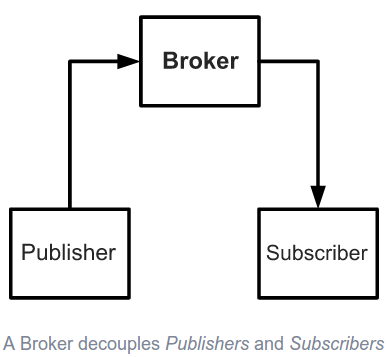
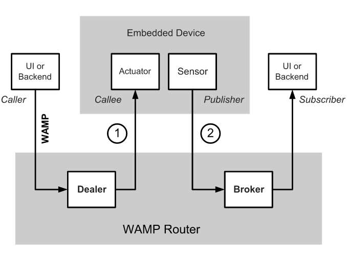

2017/04/13 - Web Application Messaging Protocol¶
Introduction¶
Web Application Messaging Protocol(WAMP)[#]_ provides Unified Application Routing in an open WebSocket protocol that works with different languages.
Using WAMP you can build distributed systems out of application components which are loosely coupled and communicate in (soft) real-time.
At its core, WAMP offers two communication patterns for application components to talk to each other:
Publish & Subscribe (PubSub)
Remote Procedure Calls (RPC)
WAMP is easy to use, simple to implement and based on modern Web standards: WebSocket, JSON and URIs.
Unified Application Routing¶
Unified Routing is probably best explained by contrasting it with legacy approaches.
Old client-server model: a Caller needs to have knowledge about where the Callee resides and how to reach it.
{kind=link}
The problems coming from strong coupling between application components were long recognized and this (besides other requirements) lead to the publish-subscribe model.
Publish-subscribe model : a Publisher submits information to an abstract “topic”, and Subscribers only receive information indirectly by announcing their interest on a respective “topic”. Both do not know about each other. They are decoupled via the “topic” and via an intermediary usually called Broker:
{kind=link}
Now, WAMP translates the benefits of loose coupling to RPC. Different from the client-server model, WAMP also decouples Callers and Callees by introducing an intermediary - the Dealer:
{kind=link}
Similar to a Broker’s role with PubSub, the Dealer is responsible for routing a call originating from the Caller to the Callee and route back results or errors vice-versa.
{kind=link}
Summary¶
WebSocket is based on TCP, so it could not support multicast or broadcast. By using this subprotocol WAMP, WebSocket could communicate with multi-clients, just like multicast.
Reference¶
| [1] | http://wamp-proto.org/why/ |